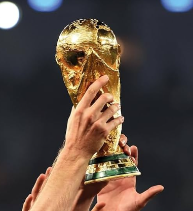
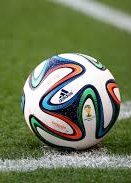

The World Cup
"The FIFA World Cup is the most important football tournament on the planet, where the best national teams compete for glory every four years. Throughout history, this event has brought together millions of fans, creating unforgettable moments and leaving a lasting mark on football. On this page, you will find information about its history, the teams, the most outstanding players, and the tournament's most surprising records. Explore and enjoy the thrilling world of football!"
History
The FIFA World Cup was born in 1930, a time when football had already established itself as one of the most popular and beloved sports in the world. The inaugural tournament took place in Uruguay, where the host country not only organized the event but also claimed the first-ever World Cup title. From that point forward, the tournament has grown in both prestige and scale, evolving into the most important international competition in the world of football, with nations across the globe dreaming of lifting the trophy. Throughout its rich history, the World Cup has been the stage for countless unforgettable moments. In 1950, the world witnessed the legendary 'Maracanazo,' where Uruguay stunned Brazil in the final, defeating them in the famous Maracanã Stadium. Then came the brilliance of Pelé, who captivated the world with his performances in 1958 and 1970, leading Brazil to victory and cementing his legacy as one of the greatest players of all time. In 1986, Argentina’s Diego Maradona made history with his 'Hand of God' goal and the stunning solo 'Goal of the Century,' taking the world by storm with his incredible skills and passion for the game. More recently, the World Cup witnessed the remarkable journey of Lionel Messi, who led Argentina to glory in 2022, finally capturing the one title that had eluded him for years, solidifying his status as one of the greatest footballers of all time. Today, the FIFA World Cup stands as the most-watched sporting event on the planet, uniting people of all backgrounds and cultures through a shared love for the beautiful game. It brings together not only the best teams and players but also fans from every corner of the earth, making it a true global celebration of football and human spirit.

Top Scorers:
- Miroslav Klose (Germany) – 16 goals (2002, 2006, 2010, 2014)
- Ronaldo Nazário (Brazil) – 15 goals (1994, 1998, 2002, 2006)
- Gerd Müller (Germany) – 14 goals (1970, 1974)
- Just Fontaine (France) – 13 goals (1958)
- Lionel Messi (Argentina) – 13 goals (2006, 2010, 2014, 2018, 2022)
- Kylian Mbappé (France) – 12 goals (2018, 2022)
- Pelé (Brazil) – 12 goals (1958, 1962, 1966, 1970)
- Sándor Kocsis (Hungary) – 11 goals (1954)
- Jürgen Klinsmann (Germany) – 11 goals (1990, 1994, 1998)
- Helmut Rahn (Germany) – 10 goals (1954, 1958)
